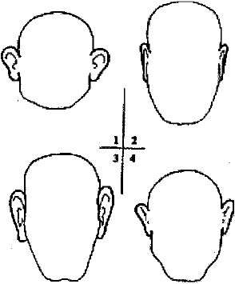

Ara ş t ı rma Serisi No.13
¯¯¯¯¯¯¯¯¯¯¯¯¯¯¯¯¯¯¯¯¯¯¯¯¯¯¯¯¯¯¯¯¯¯
25
Yüz Okuma Sanat ı
¯¯¯¯¯¯¯¯¯¯¯¯¯¯¯¯¯¯¯¯¯¯¯¯¯¯¯¯¯¯¯¯¯¯
Kulaklar
Büyük ve kepçe kulaklar ( Ş ekil 6, No.l) - hilekar. Yass ı kulaklar ( Ş ekil 6, No.2) - tedbirli, so ğ ukkanl ı , iradeli. Kulak memesi bükük ve belirgin olan büyük kulaklar ( Ş ekil 6, No.3) - müzik yetene ğ i
Yukar ı k ı sm ı keskin kulaklar

( Ş ekil 6, No.4) - akilli, ölçülü
ı l ı ml ı ,
E ğ er kula ğ ı n d ı ş cephesinin tüm ö ğ eleri e ş it ş ekilde geli ş mi ş se bu kulaklara sahip ki ş ilerin akli ve zeka yetene ğ i de iyi geli ş mi ş tir. A ş ı r ı etli kulaklar - somurtkan, kaba.
Çok küçük kulaklar - duyarl ı Sert kulaklar - sa ğ l ı ğ ı yerinde Dik kulaklar - hastal ı k
Dar ve uzun kulaklar - hasetçi, tamahkar. E ğ er kulak memesi oyuk ş ekilli ise - yetenekli Dörtgen kulaklar - metanetli, nezaketli, edepli
Tüylü kulaklar - muhakeme yetene ğ i güçlü; ayr ı ca, etli ise -hassas, duyarl ı
__________________________________________________________________
© WWW.MAXIMUMBILGI.COM